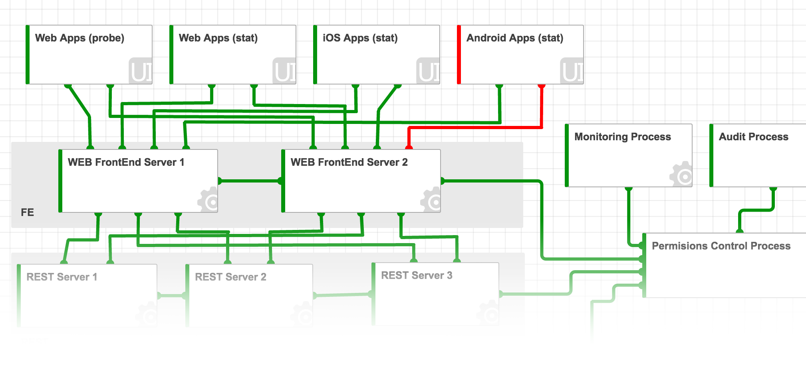

LiveScheme Reason to be
Some of LiveSchema screenshots examples are here on the page.
WW and US economics digitalisation
Digitization has advanced in a series of accelerating waves that touch more and more participants. As each one builds on and ampli es what has come before, the waves are hitting in faster succession and with greater impact. Today the focus is on connectivity, platforms, data, and software. Check the reffered report by McKinsey
Each and any digitalal business
The digital business is bases on infrastructure and application organisation and management. Customers loyalty and company profit is strongrly corelated with services uptime and right desigion making. That's why modeling and schaming extremly important in digital busines.The image source
Cristal clear and managable
To make the right desicion personel need to have exactly right understanding of how all the services, applications and infrastructure elemets are orginized and interconnected, what is the actual state for each object and communication. The only and unuque solution is LiveSchema.  The LiveSchema
02 Mar 2017
Contact us on welcome@liveschema.io